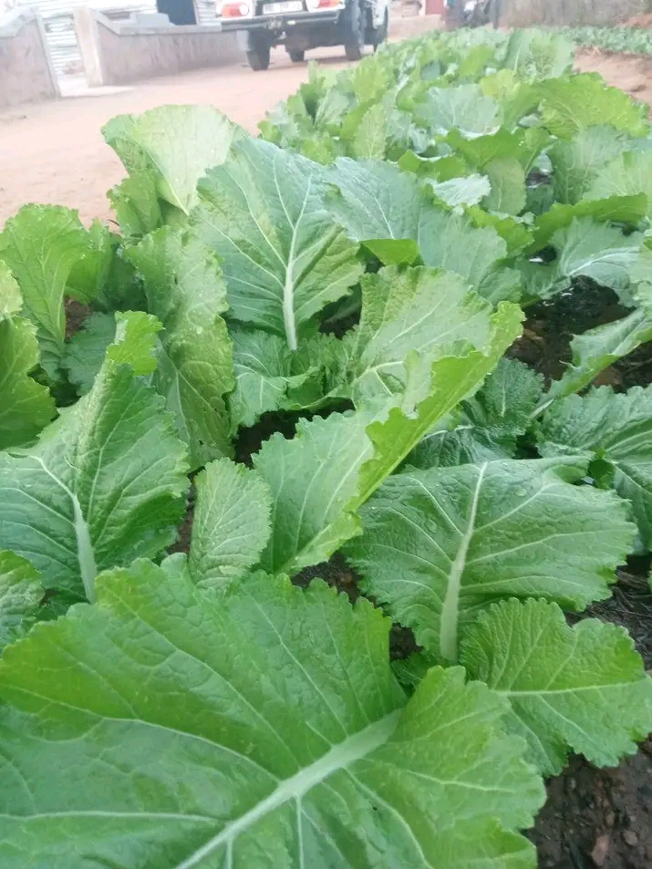
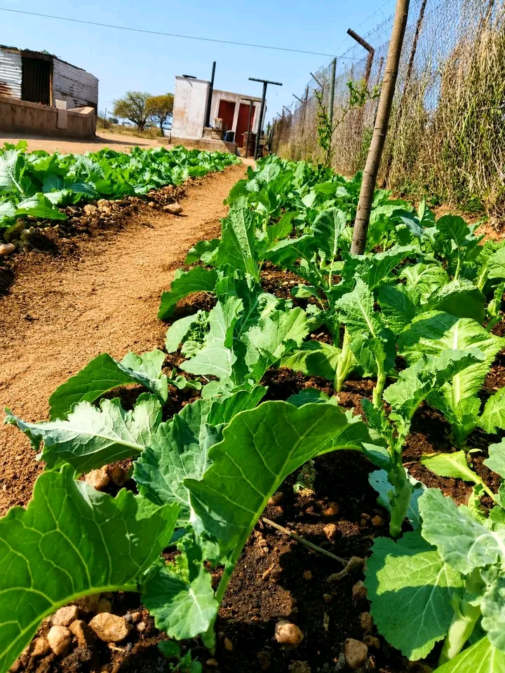
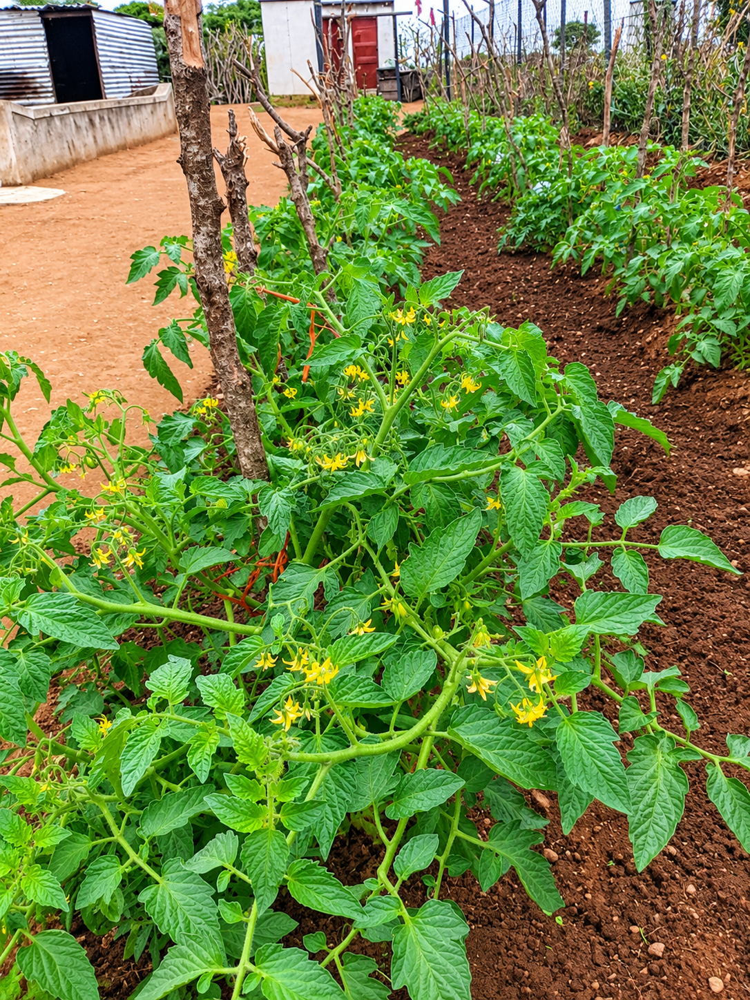
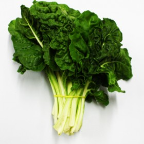
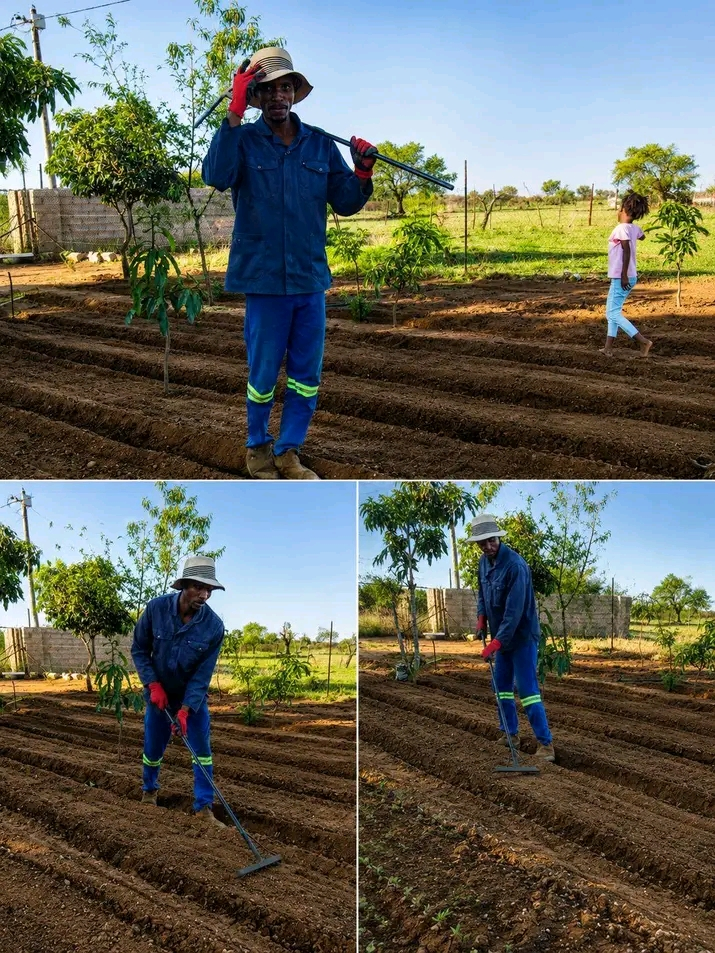

Mustard Spinach
R15 per bunch
Fresh, healthy vegetables grown in Moletjie, Polokwane
Tshemo ya Kasi is a backyard market garden started in 2017. We grow mixed vegetables and supply our community with fresh produce.

R15 per bunch

R15 per bunch

R10 for 10 tomatoes

R20 for 5 beetroots

R15 per bunch

Tap the button to order fresh vegetables on WhatsApp.
Order on WhatsAppStand 220, Moletjie Maupye Damplaats, Polokwane, Limpopo
Phone: 076 295 0007
Email: sydneychuene93@gmail.com